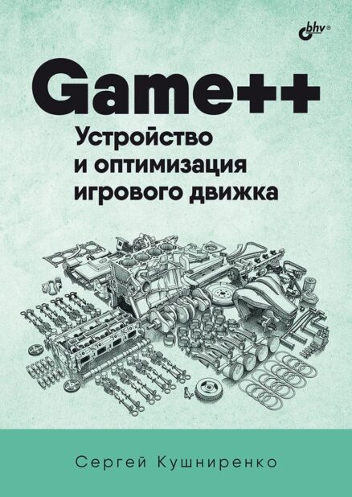

Game++. Costruire e ottimizzare un motore di gioco
Come funziona un motore di gioco moderno sotto il cofano: architettura, sottosistemi e ottimizzazione pratica. Pubblicato in russo da BHV.
Recensioni
PDF + EPUB · presto